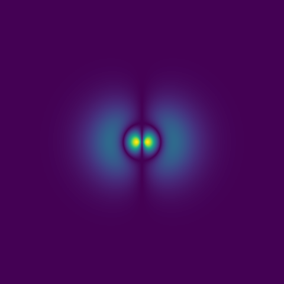
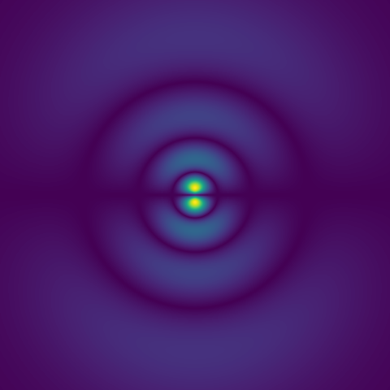

Overview
In this project I intended on improving the model created in the previous project with the same objective: to create a CNN that is able to accurately classify the priniciple quantum number.
- The CNN architecture was simplified in alignment with the demands of the task
- The training data was improved by generating images from n = 1 to n = 7, increasing the size of the training data set.
- This time around the model could accurately classify the principle quantum number of an image of an orbital.


Please view the related github repository below to see examples of my code: